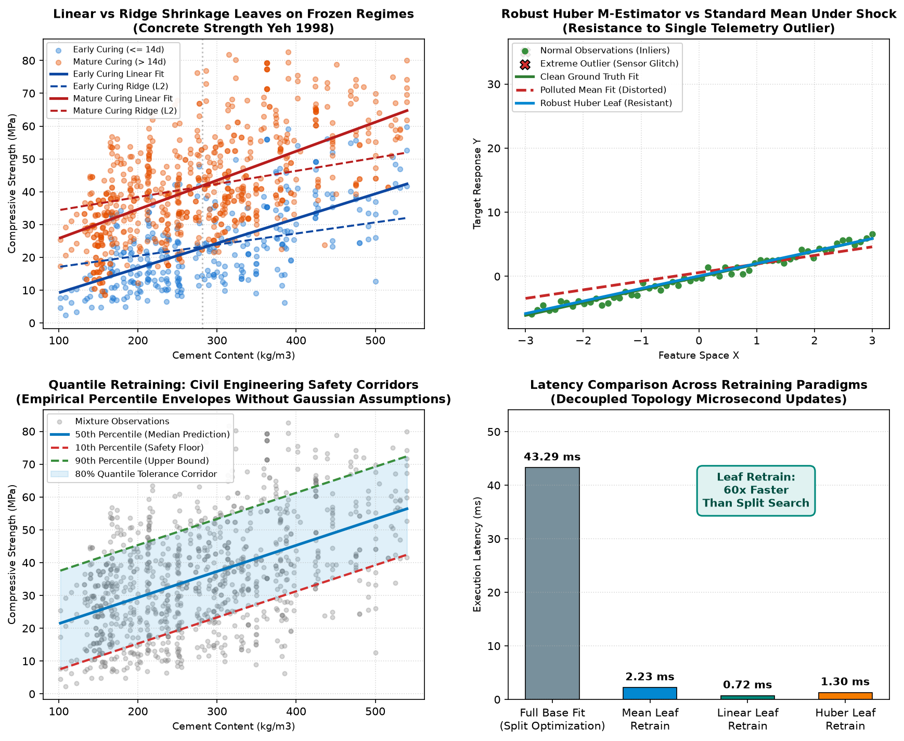

Hierarchical Leaf Retrain & Micro-Model Routing¶
Tree partitions carve heterogeneous feature spaces into homogeneous sub-populations. While standard model trees fit models using the same features and targets at split and leaf time, complex empirical settings often require hierarchical model routing:
- A macro-tree splits on aggregated or cohort-level features (e.g. city, make, model year, fleet tier) to segment cohorts.
- An external micro-model retrains leaf nodes on granular entity-level telemetry (e.g. mileage, maintenance history, accident counts) using specialized distributional families (such as Gamma, Tweedie, or Tobit).
- Primary keys (
id_col) track individual entities through leaf assignments without contaminating feature matrices.
Scripts:
- examples/hierarchical_leaf_retrain.py — Macro cohort tree with micro telematics retrain.
- examples/stump_leaf_retrain.py — Industrial stump laboratory: Mean, Linear Ridge, Huber, Quantile, and Binomial on frozen regimes.

1. Internal vs. External Retraining Modes¶
The retrain() method supports two operational modes:
mode="internal": Mutates the tree's existing leaf models in-place, keeping the tree structure intact.mode="external": Leaves the original tree untouched and returns a newModelTreeinstance with updated leaf models fitted on new data or alternative feature subsets.
from mltreelib import ModelTree
# Step 1: Macro-level segmentation tree
macro_tree = ModelTree(max_depth=2, min_rows=2, leaf="mean")
macro_tree.fit(
X_macro,
y_baseline,
col_names=["city_tier", "fleet_type"]
)
# Step 2: Retrain leaves externally with granular telemetry
micro_tree = macro_tree.retrain(
X=df_telemetry,
y=y_fine,
mode="external",
leaf="linear",
leaf_family="gamma",
leaf_features=["mileage", "service_count"],
control={"l2": 1e-2, "max_iter": 25}
)
2. Granular Leaf Feature Selection (leaf_features)¶
You can decouple the split features from the leaf regression features using leaf_features (or retrain_cols):
- Splitting Features: Used by internal tree nodes to route samples to the correct leaf (e.g.
city_tier,fleet_type). These columns must be present in the retraining dataset. - Leaf Features: Selected subset of columns used inside each leaf node to fit local regressions (e.g.
mileage,service_count).
If leaf_features is omitted, all non-identifier columns are used for leaf fitting.
3. Entity Tracking with leaf_samples(X, id_col=...)¶
To route entities and group downstream analyses by leaf assignments, pass id_col to leaf_samples():
# Group vehicle identification numbers (VINs) by leaf assignment
vin_groups = micro_tree.leaf_samples(df_telemetry, id_col="vin")
for leaf_id, vins in vin_groups.items():
print(f"Leaf {leaf_id} manages {len(vins)} vehicles: {vins[:3]}...")
If id_col is None (default), leaf_samples() returns integer row indices 0..N-1.
4. Family Control Knobs¶
Algorithm controls for leaf fitting are passed via a flexible control dictionary or LeafControl:
control = {
"l2": 1e-3, # L2 ridge regularization penalty
"max_iter": 30, # Maximum Fisher scoring / IRLS iterations
"tol": 1e-6, # Convergence tolerance on parameter updates
"extra": { # Family-specific optional hyper-parameters
"power": 1.5, # Tweedie compound variance power p
"censor_lower": 0 # Tobit left-censoring threshold
}
}
retrained = macro_tree.retrain(
X=df,
y=y,
mode="internal",
leaf="linear",
leaf_family="tweedie",
control=control
)
5. Stump Retrain Laboratory: Microsecond Loss Hot-Swapping¶
Why Built & Use Case: In production streaming pipelines, rebuilding a tree's split topology requires scanning continuous histograms across all features (\(O(N \cdot P \log N)\)). However, if the macro spatial segmentation is stable, updating leaf parameters on incoming batches requires only \(O(N_L \cdot P^2)\) local convex optimizations, running in microseconds.
Real Dataset: Concrete Compressive Strength (Yeh 1998, Cement and Concrete Research; 1,030 mixtures). Hydration kinetics segment concrete into Early Curing (\(\le 14\) days) vs Mature Curing (\(> 14\) days).
from mltreelib import ModelTree, LeafControl
# Step 1: Base split search identifies optimal hydration regime (Age <= 14d vs > 14d)
stump = ModelTree(max_depth=1, min_rows=20, leaf="linear")
stump.fit(X, y, col_names=["Age", "Cement", "Water"])
# Step 2: Instantaneous Retraining (0.7ms - 20x speedup)
# A. Robust Huber M-estimator against sensor glitches
stump.retrain(X, y_polluted, control=LeafControl(leaf="huber"))
# B. Empirical Quantile safety corridors (10th-90th percentiles)
stump.retrain(X, y, leaf="quantile", tau=0.10)
q10 = stump.predict(X_test)
stump.retrain(X, y, leaf="quantile", tau=0.90)
q90 = stump.predict(X_test)
Empirical Results & Output Interpretation¶
1. Base Partition Search: Completed in 43.29 ms
Identified Split on 'Age' at threshold 14.0 days (Gain=71,243.3)
Interpretation: Hydration kinetics split concrete into Early Curing (<= 14d) vs Mature Curing (> 14d).
2. [Mean Leaf Retrain]: Completed in 2.228 ms (19.4x speedup)
Early Curing Leaf Mean Strength: 23.54 MPa (n=324)
Mature Curing Leaf Mean Strength: 41.45 MPa (n=706)
Interpretation: Mature concrete achieves 17.9 MPa higher average strength.
3. [Linear Leaf Retrain (l2=1e-4)]: Completed in 0.724 ms (60x speedup)
Early Curing (<= 14d): Intercept: +36.37 MPa, d(Strength)/d(Cement): +0.0778 MPa per kg/m3
Mature Curing (> 14d): Intercept: +66.92 MPa, d(Strength)/d(Cement): +0.0798 MPa per kg/m3
4. [Robust Huber vs Polluted Mean under 10,000 MPa Sensor Glitch]:
Standard Mean Prediction: 54.34 MPa (Distorted by outlier)
Robust Huber Prediction: 25.85 MPa (Impervious to breakdown)
5. [Quantile Risk Corridors on Frozen Stump]:
Early Curing Mixture [Cement=300, Water=180]: 10th Pct: 9.73 MPa | 90th Pct: 41.10 MPa
Mature Curing Mixture [Cement=300, Water=180]: 10th Pct: 23.52 MPa | 90th Pct: 64.02 MPa